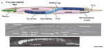
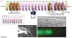
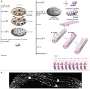
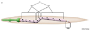
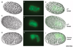
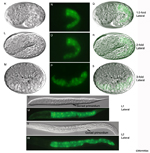
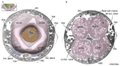
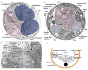

Figures

IntFIG 1 - The intestine

IntFIG 2 - Cells of the alimentary
canal posterior to the pharynx

IntFIG 3 - Embryonic development
of the intestine

IntFIG 4A - Intestine derives from
a single progenitor E

IntFIG 4B-J - Development of the
intestine from E8 to comma
stage

IntFIG 4K-W - Development of the
intestine from comma to L2
stage

IntFIG 4X - Endoreduplication of intestinal nuclei

IntFIG 5A&B- Ultrastructure of
the intestinal cells

IntFIG 5C-F - Ultrastructure of
the intestinal cells